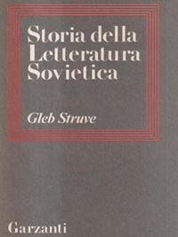
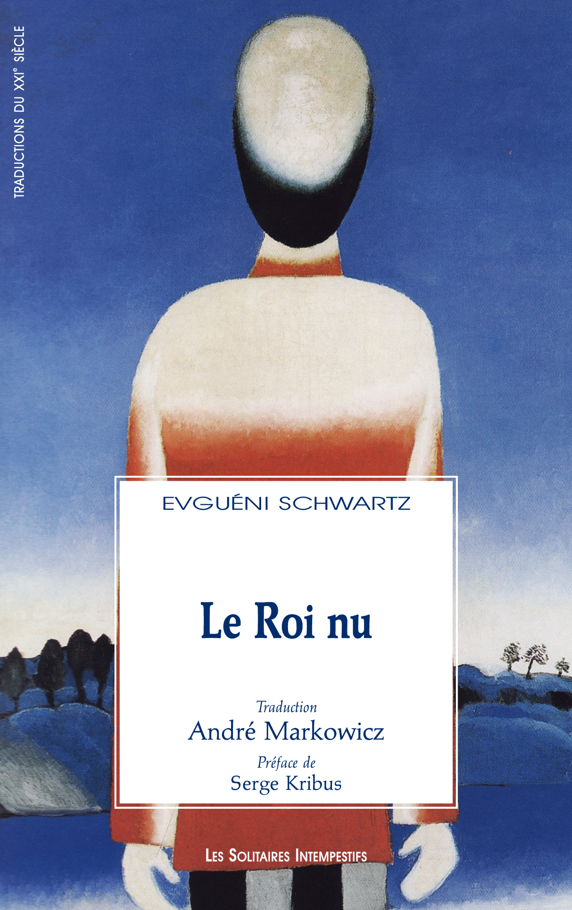
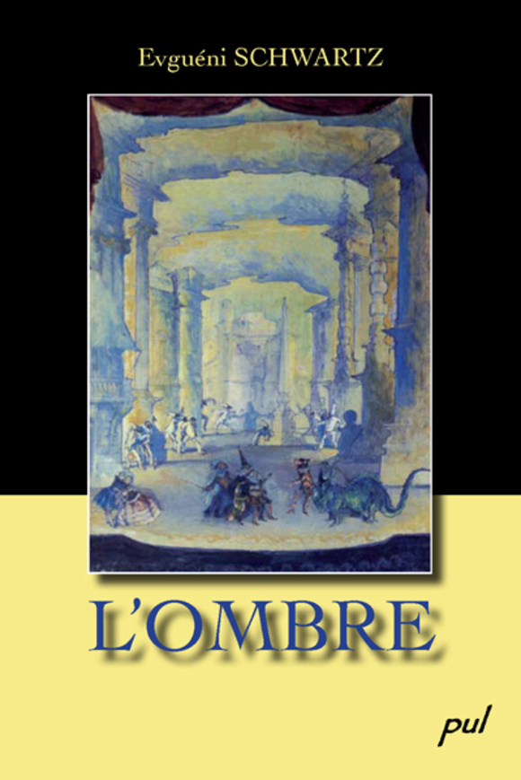
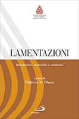

59:45 · 19 OPERE
Il drago di Evgenij Schwarz.
Il filo del discorso
Il contributo presenta Il drago di Evgenij Schwarz come una fiaba teatrale sulla capacità del potere di farsi accettare dalle proprie vittime. L’occasione è il ritorno in evidenza di una precedente recensione del relatore, che collega polemicamente il titolo all’anniversario del governo italiano allora in carica. La lettura colloca il dramma accanto a Il re nudo e L’ombra e ne sottolinea la mescolanza di comicità, immaginazione fiabesca e interrogazione politica. L’interpretazione antifascista viene affiancata a una lettura più ampia delle tirannie, compreso lo stalinismo. L’analisi procede attraverso personaggi e scene. Il gatto consiglia prudenza a chi vive al sicuro; gli abitanti consegnano senza ribellarsi la vittima richiesta dal drago; Charlemagne difende il mostro ricordandone i presunti benefici per la città. Il relatore vede in questi episodi la costruzione della docilità e la sostituzione del giudizio con il bisogno di protezione. Il borgomastro e suo figlio rappresentano, nella sua lettura, opportunismo, carriera e menzogna. Al loro comportamento si contrappongono Lancellotto, la saggezza degli animali e il libro immaginario che raccoglie i lamenti del mondo. Ampie digressioni collegano il dramma alla critica della burocratizzazione, della scuola e dell’industria culturale, richiamando Illich, Sofocle, Alice Miller, Popper, la Bibbia, Shakespeare e Pasolini. I paralleli con la pandemia, le vaccinazioni, i mezzi di informazione e le istituzioni appartengono alla posizione polemica del relatore: il testo teatrale non costituisce una verifica delle sue accuse o delle sue conclusioni sanitarie. Anche le digressioni sulla storia della scienza contengono imprecisioni da distinguere dalla lettura letteraria. La conclusione sposta l’attenzione dalla sconfitta esteriore del tiranno alla liberazione delle persone dalla sua impronta interiore. Lancellotto viene interpretato come educatore: occorre recuperare giudizio, coraggio, sensibilità e capacità di riconoscere la sofferenza. Il richiamo finale alla gioia completa questa proposta di un’educazione che il relatore oppone all’obbedienza e alla deformazione delle anime.
I libri nel discorso

Il drago
Copertina: Einaudi · Collezione di teatro 104
Copertina autentica controllata visivamente. Edizione di riferimento, non identificata come quella usata nel video.
Il relatore introduce il testo teatrale di Evgenij Schwarz e la propria precedente recensione; il titolo Il drago è ripetuto nella trilogia a 250 s.
Passaggio 0:24 ↗ · Fonti e libro ↗
Storia della letteratura sovietica. Da Lenin a Stalin
Copertina: Garzanti · Storia della letteratura sovietica ·1977
Fotografia autentica della copertina dell’edizione Garzanti 1977, riscontrata nel catalogo Braidense. Il codice commerciale 5000089541682 dell’esemplare usato non è presentato come ISBN; nessuna edizione attribuita al video.
Struve è richiamato esplicitamente per la sua Storia della letteratura sovietica; l’asserita omissione di Schwarz resta un rilievo del relatore.
Passaggio 2:45 ↗ · Fonti e libro ↗
Il re nudo
Copertina: Les Solitaires Intempestifs · Le Roi nu · André Markowicz · catalogo dell’edizione francese, ristampa 2025
Copertina ufficiale dell’edizione francese, messa a disposizione dall’editore come immagine libera da diritti. La scheda conserva la data della prima edizione 2003, mentre il medesimo ISBN è riferito dai cataloghi alla ristampa 2025; nessuna edizione attribuita al filmato.
Il re nudo è nominato fra le tre opere politiche di Schwarz e datato 1934.
Passaggio 4:00 ↗ · Fonti e libro ↗
L’ombra
Copertina: Presses de l’Université Laval · L’ombre · traduzione francese 2009
Copertina autentica dell’opera, controllata visivamente; edizione di riferimento indipendente, non attribuita al filmato.
L’ombra è nominata nella trilogia e datata 1940.
Passaggio 4:06 ↗ · Fonti e libro ↗Il drago
Copertina: Einaudi · Collezione di teatro 104
Copertina autentica controllata visivamente. Edizione di riferimento, non identificata come quella usata nel video.
Il drago, indicato anche come Drakon, è la terza opera della trilogia; il parlato lo data 1943.
Passaggio 4:10 ↗ · Fonti e libro ↗
I cavalieri
Copertina: Knights, Richer Resources Publications, traduzione inglese di Ian Johnston, ISBN paperback 9781935238744. Copertina blu, nera e oro con due mani che tirano una fila di salsicce. Edizione inglese di riferimento, non identificata come esemplare del relatore.
Immagine autentica dell’opera, controllata visivamente; l’edizione di riferimento non è attribuita al filmato.
Titolo I cavalieri e autore Aristofane sono espliciti nel confronto con il coro e con il ruolo del popolo.
Passaggio 10:45 ↗ · Fonti e libro ↗Il drago
Copertina: Einaudi · Collezione di teatro 104
Copertina autentica controllata visivamente. Edizione di riferimento, non identificata come quella usata nel video.
Il relatore legge il consiglio del gatto di tacere quando si gode di una sistemazione comoda e protetta.
Passaggio 13:11 ↗ · Fonti e libro ↗
Descolarizzare la società. Una società senza scuola è possibile?
Copertina: Mimesis, collana Mimesis. Biblioteca, 2019, ISBN 9788857556321. Edizione italiana moderna di riferimento, non prima edizione dell’opera.
Immagine autentica dell’opera, controllata visivamente; l’edizione di riferimento non è attribuita al filmato.
Ivan Illich è nominato; il seguito richiama esplicitamente la descolarizzazione della società, in relazione alla critica dell’istruzione amministrata.
Passaggio 25:44 ↗ · Fonti e libro ↗
Antigone
Copertina: Einaudi · Collezione di teatro · edizione di riferimento
Immagine associata all’ISBN di riferimento e controllata visivamente; edizione e traduzione non identificate come quelle citate o lette nel video.
Sofocle e Antigone sono identificabili nel richiamo al celebre canto sull’essere umano e sulle sue capacità; la citazione è una parafrasi del relatore.
Passaggio 29:31 ↗ · Fonti e libro ↗
Vangelo secondo Matteo
Identificazione probabile
Copertina del volume completo: San Paolo, 2014 · Nuova Versione dai Testi Antichi · edizione di riferimento
Vangelo secondo Matteo è un libro della Bibbia. L’immagine mostra il volume completo San Paolo di riferimento, non un’edizione autonoma del singolo libro e non una versione identificata nella citazione.
Il richiamo ai falsi profeti riconosciuti dai frutti identifica Matteo 7,15–20; il Vangelo non è specificato per nome nel parlato.
Passaggio 35:40 ↗ · Fonti e libro ↗
La società aperta e i suoi nemici
Identificazione probabile
Copertina: Armando Editore · Classici · 2018 · volume unico
Copertina autentica di riferimento, controllata visivamente. L’edizione non è identificata come quella usata nel video.
Popper e l’idea di Platone nemico della società aperta rendono probabile il richiamo alla sua opera, senza un titolo bibliografico completo.
Passaggio 38:16 ↗ · Fonti e libro ↗Il drago
Copertina: Einaudi · Collezione di teatro 104
Copertina autentica controllata visivamente. Edizione di riferimento, non identificata come quella usata nel video.
Lettura dell’episodio del colera: Charlemagne difende il drago che ha fatto bollire il lago. Il relatore sviluppa un paragone polemico con il presente.
Passaggio 40:35 ↗ · Fonti e libro ↗Il drago
Copertina: Einaudi · Collezione di teatro 104
Copertina autentica controllata visivamente. Edizione di riferimento, non identificata come quella usata nel video.
Viene letto il racconto del libro immaginario dei lamenti, che si accresce attraverso la sofferenza del mondo; è un libro immaginario interno al racconto.
Passaggio 44:19 ↗ · Fonti e libro ↗
Lamentazioni
Copertina: San Paolo · Lamentazioni · introduzione, traduzione e commento di Elzbieta Obara ·2012
Copertina ufficiale del volume San Paolo 2012 che presenta il libro biblico, traduzione e commento. Elzbieta Obara è la traduttrice e commentatrice moderna, non l’autrice del testo biblico; edizione non attribuita al filmato.
Il relatore nomina il libro biblico delle Lamentazioni, distinguendolo dal libro immaginario raccontato da Lancellotto.
Passaggio 46:06 ↗ · Fonti e libro ↗
Giulio Cesare
Copertina: Feltrinelli · Universale Economica I Classici · 2013
Copertina autentica dell’edizione di riferimento, non attribuita all’esemplare del video.
Shakespeare e Giulio Cesare sono nominati nella parafrasi della ragione che abbandona gli esseri umani e si rifugia fra le bestie.
Passaggio 48:35 ↗ · Fonti e libro ↗
La ballata delle madri
Identificazione probabile
Copertina della raccolta: Garzanti · 2001
La ballata delle madri è contenuta in Poesia in forma di rosa. L’immagine mostra la raccolta Garzanti del 2001, con prefazione di Edoardo Esposito, non un volume autonomo della poesia né l’edizione del video.
Pasolini e la domanda sulle madri identificano La ballata delle madri, benché il titolo non sia pronunciato nella forma completa.
Passaggio 51:02 ↗ · Fonti e libro ↗Il drago
Copertina: Einaudi · Collezione di teatro 104
Copertina autentica controllata visivamente. Edizione di riferimento, non identificata come quella usata nel video.
Lettura del dialogo nel quale il drago descrive le anime deformate e rese docili dal proprio dominio.
Passaggio 53:55 ↗ · Fonti e libro ↗Bibbia
Copertina: San Paolo, 2014 · Nuova Versione dai Testi Antichi · edizione di riferimento
Il testo biblico è richiamato esplicitamente per l’essere umano creato a immagine e somiglianza divina; nessuna edizione o traduzione è identificata.
Passaggio 54:15 ↗ · Fonti e libro ↗Il drago
Copertina: Einaudi · Collezione di teatro 104
Copertina autentica controllata visivamente. Edizione di riferimento, non identificata come quella usata nel video.
Lettura del compito finale di Lancellotto: liberare anche interiormente gli abitanti dalla presenza del drago, seguito dal richiamo alla gioia.
Passaggio 56:44 ↗ · Fonti e libro ↗